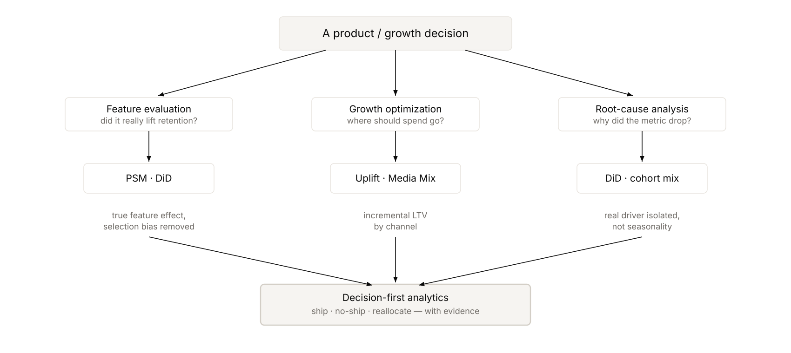

One integrated suite across launch impact, growth allocation, and performance diagnosis.
This hub combines three connected analyses used to make high-confidence product decisions: identifying true feature impact, allocating growth spend by incremental value, and diagnosing post-launch metric declines without jumping to false conclusions.

One question, three causal studies, one evidence-backed decision: the suite as a repeatable ship / no-ship / reallocate framework.
Used propensity score matching to separate selection bias from feature effect and avoid shipping a change that did not improve retention.
Open Study →Combined media mix and uplift modeling to identify channels that create durable incremental lifetime value rather than short-term attribution wins.
Open Study →Applied agentic root-cause analysis and DiD to isolate cohort mix and seasonality as the primary drivers behind a post-launch engagement decline.
Open Study →PSM and DiD to estimate incremental outcomes under controlled comparison logic.
Uplift and media mix models to rank channels by true long-term value contribution.
Metric frameworks and guardrails aligned to ship/no-ship product decisions.
Translated model outputs into action-oriented recommendations for stakeholders.
The three studies work together as a repeatable framework for product and growth teams: evaluate impact causally, allocate investment by incremental value, and diagnose declines with evidence before making expensive rollbacks or scale decisions.